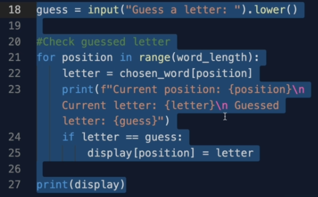
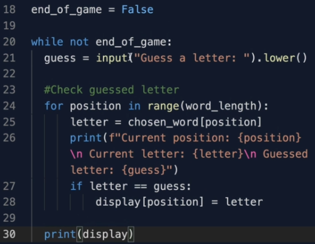
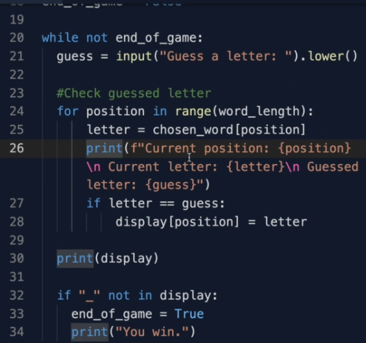

مرحبا بك في حل التحدي الثالث اتمنى انك قمت بحل التحدي وجئت لتتحقق من الكود الخاص بي
نحن نعرف ان الجزء الذي عليه ان يتكرر في الكود الخاص بنا هو هذا الجزء

حيث فيه نحن نسأل اللاعب ان يحزر الحرف
اذن ماعليها فعله هو وضعه في حلقة
while
من خلال اضافة فراغ
indentation
للكل الاسطر للدلالة على انها تنتمي للحلقة
ولكن ماهو شرط الحلقة؟
نحن نعرف ان الحلقة يجب ان تنتهي عندما لايوجد فراغات في القائمة
display
سوف نعرف متغيرا نسميه
end_of_game
وقيمته الابتدائية هي
False
ونضعه كشرط في الحلقة الخاصة بنا من خلال نفيه
تذكر انه لكي تتنفذ الحلقة باستمرار يجب ان يكون شرطها True و الشرط الذي وضعناه قيمته False لذلك قمنا بنفيه وهذا ما سيجعل الحلقة الخاص بنا تستمر في التنفيذ
لو شغلنا اللعبة الخاصة بنا الان سوف تعمل الى الابد وسيبقى اللاعب يحزر في الحروف الى الابد لانه لم نقم بقلب قيمة المتغير end_of_game في اي جزء من الكود الخاص بنا اذن اين نقوم بقلب قيمته؟ في اخر حلقة ال while فنقول اذا كان "_" غير موجود في display ونستعمل هنا الكلمة in وهي تخولنا التحقق من عنصر ان كان ينتمي في قائمة او لا في تلك الحالة نقوم بقلب قيمة end_of_game الى True وهو مايجعل الحلقة تتوقف وسوف نقوم بطباعة ان اللاعب قد ربح
نلتقي في الجهة الاخرى حيث سنقوم بحل تحدي اخر ان شاء الله